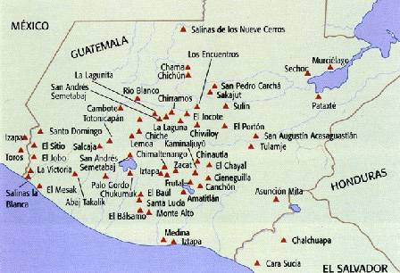
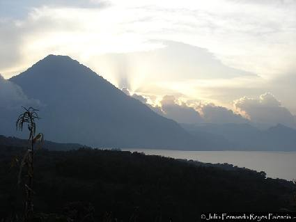
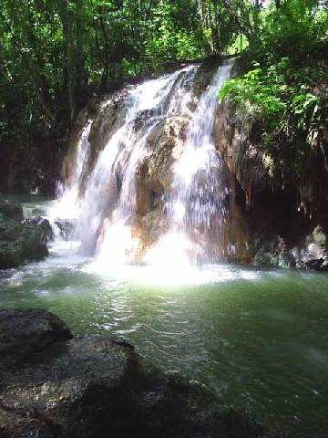
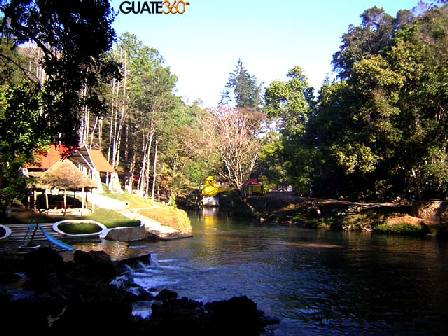
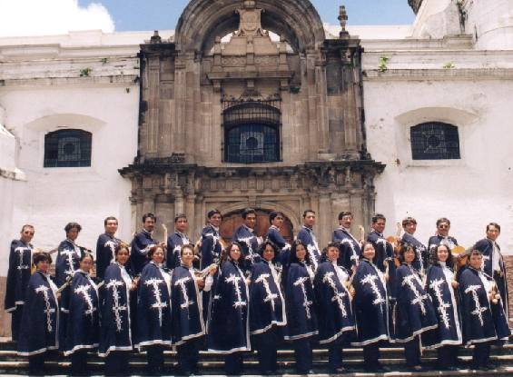

"Cantándole a la vida"
 Fuente:http://www.mayasautenticos.com/images/preclassic-guatemala.jpg
|
La República
de Guatemala es uno de los países que forman América central.
Limita al norte y el oeste con México; al norte y el este con Belice
y el mar Caribe; al sur con el Océano Pacífico y al sur
y el este con Honduras y El Salvador. Es un país de grandes y profundos bosques, en gran parte montañoso, con suaves playas en el sur y planicies bajas en el norte. Posee gran diversidad ecológica y tiene una extensión de 108.890 km². Sus costas suman unos 400 km y tiene más de 1.600 km de frontera. La capital es Ciudad Guatemala, que es la ciudad más poblada del país. Tiene por idioma oficial el español, aunque entre la población indígena se conservan idiomas como el maya, el xinca y el garífuna. Su moneda es el Quetzal y está en el huso horario UTC-6. |
"La Estudiantina Monteflor de Guatemala"
El nombre de este grupo musical tiene el siguiente orígen: MONTE por las COLONIAS MONSERRATH y MONTE VERDE y FLOR por la COLONIA FLORIDA. "La estudiantina Monteflor de Guatemala" fue fundada el 03 de junio de 1973 por el Reverendo JOSÉ REFUGIO DE LA TORRE, en aquel entonces, Seminarista de la Orden de los Somascos; un joven muy dinámico y disciplinado con objetivos bien definidos que se dio a la tarea de reunir a jóvenes de ambos sexos para unirlos a través de la música. El significado MONTEFLOR tiene gran importancia para nuestro grupo, ya que en el mismo quisimos plasmar el colorido de nuestra patria Guatemala; a la que muchos extranjeros le llaman el País de la eterna primavera por sus bellos y hermosos paisajes; para nosotros este es un colorido de ensueño por su fragancia de flor, vegetación exuberante; flora maravillosa, pincelada de Dios; es realmente como dicen, para la inspiración de Poetas. |
 Camino a Santiago Atitlan se puede
apreciar este mirador en donde se ve la belleza del lago de Atitlan y
el Volcan San Pedro. |
 Fuente: http://www.quetzalandia.com/oscaros/index.php |
Este grupo nos ha dado muchas satisfacciones una de ellas la primordial es que nos hemos mantenido unidos por muchos años a través del canto hermanado que hemos llevado para deleite de nuestra gente dejándoles siempre el mensaje de amor y paz. Para nosotros es un gozo reunirnos los fines de semana, digamos los sábados para ensayar y los domingos en las misas para alabar a Nuestro Creador Dios y ese fue el primer objetivo de nuestro fundador El Padre Cuco como le decíamos cariñosamente quien nos recomendaba siempre que no nos fuéramos a olvidar de amenizar misas. (de cantar para Dios). Otra de las satisfacciones es que conformamos una
familia. Todos nos queremos como hermanos; hemos unido a nuestras familias
ellas son nuestros mejores seguidores quienes siempre nos apoyan en
las buenas y en las malas. Otra de las grandes satisfacciones es que ahora la Estudiantina Monteflor tiene como integrantes también a nuestros hijos quienes se gozan también participando con nosotros, ensayando, tocando misas y haciendo viajes dentro y fuera de nuestro país.
|
Contamos con una Academia musical para preparar a jóvenes
o niños comprendidos entre las edades de 08 a 17 años. La Estudiantina Monteflor ha participado en muchas actividades de carácter social, por ejemplo en Asilos de ancianos, centros de beneficencia, centros penales, centros educativos, en teletones, actividades organizadas por Gobernación departamental de Guatemala, Festivales de Estudiantinas organizados por la Universidad de San Carlos de Guatemala; en nuestro país, en Honduras, y El salvador en esta última en la Universidad católica, hemos visitado, departamentos, municipios, aldeas caseríos, etc. de nuestro país haciendo obra social. |
 Fuente:www.guate360.com/galeria/details.php?image_id=647 |
 Grupo Monteflor frente a la Catedral
|
|
Humberto E. Sierra Molina |
Tuvimos la oportunidad de viajar a México Distrito Federal representando a nuestra nación, también nos presentamos en vivo en el programa televisivo "Hoy mismo" de Guillermo Ochoa y en la embajada de nuestro país en esa nación hermana. Hemos grabado a la fecha alrededor de 08 CDS (discos compactos) entre los cuales figuran también música cristiana, navideña, folklórica nacional, boleros, etc. Nuestro sueño: perdurar por muchos años más, unidos por la música y que nuestro canto lleve siempre un mensaje de amor. Por la ESTUDIANTINA MONTEFLOR DE GUATEMALA:
|
Si te interesa oír un tema grabado por este grupo puedes escribir a su Web; al Director Administrativo autor de esta nota, o a Graciela en graciela_maria_vida_reflexion@yahoo.com.ar
Por razones de "peso", en este sitio, no es posible
musicalizar la página
con un tema ejecutado y cantado por el grupo. No obstante, he insertado "Piel
Canela", en formato "midi", que también lo cantan.